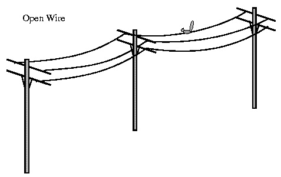
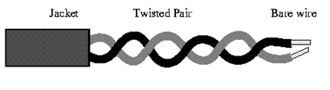
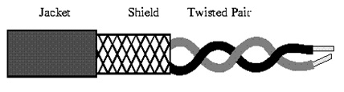
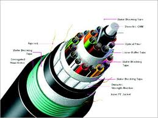
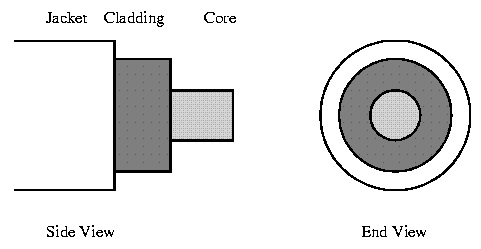

|
Transmission Media - Guided
There are 2 basic categories of Transmission Media:
Guided and
Unguided.
Guided Transmission Media uses a "cabling" system that guides the data signals along a specific path. The data signals are bound by the "cabling" system. Guided Media is also known as Bound Media. Cabling is meant in a generic sense in the previous sentences and is not meant to be interpreted as copper wire cabling only.
Unguided Transmission Media consists of a means for the data signals to travel but nothing to guide them along a specific path. The data signals are not bound to a cabling media and as such are often called Unbound Media.
There 4 basic types of Guided Media:
- Open Wire
- Twisted Pair
- Coaxial Cable
- Optical Fibre
Open Wire
Open Wire is traditionally used to describe the electrical wire strung along power poles. There is a single wire strung between poles. No shielding or protection from noise interference is used. We are going to extend the traditional definition of Open Wire to include any data signal path without shielding or protection from noise interference. This can include multiconductor cables or single wires. This media is susceptible to a large degree of noise and interference and consequently not acceptable for data transmission except for short distances under 20 ft

Twisted Pair
The wires in Twisted Pair cabling are twisted together in pairs. Each pair would consist of a wire used for the +ve data signal and a wire used for the -ve data signal. Any noise that appears on 1 wire of the pair would occur on the other wire. Because the wires are opposite polarities, they are 180 degrees out of phase (180 degrees - phasor definition of opposite polarity). When the noise appears on both wires, it cancels or nulls itself out at the receiving end. Twisted Pair cables are most effectively used in systems that use a balanced line method of transmission: polar line coding (Manchester Encoding) as opposed to unipolar line coding (TTL logic).

The degree of reduction in noise interference is determined specifically by the number of turns per foot. Increasing the number of turns per foot reduces the noise interference. To further improve noise rejection, a foil or wire braid shield is woven around the twisted pairs. This "shield" can be woven around individual pairs or around a multi-pair conductor (several pairs).

Cables with a shield are called Shielded Twisted Pair and commonly abbreviated STP. Cables without a shield are called Unshielded Twisted Pair or UTP. Twisting the wires together results in a characteristic impedance for the cable. A typical impedance for UTP is 100 ohm for Ethernet 10BaseT cable.
UTP or Unshielded Twisted Pair cable is used on Ethernet 10BaseT and can also be used with Token Ring. It uses the RJ line of connectors (RJ45, RJ11, etc..)
STP or Shielded Twisted Pair is used with the traditional Token Ring cabling or ICS - IBM Cabling System. It requires a custom connector. IBM STP (Shielded Twisted Pair) has a characteristic impedance of 150 ohms.
Coaxial Cable
Coaxial Cable consists of 2 conductors. The inner conductor is held inside an insulator with the other conductor woven around it providing a shield. An insulating protective coating called a jacket covers the outer conductor.

The outer shield protects the inner conductor from outside electrical signals. The distance between the outer conductor (shield) and inner conductor plus the type of material used for insulating the inner conductor determine the cable properties or impedance. Typical impedances for coaxial cables are 75 ohms for Cable TV, 50 ohms for Ethernet Thinnet and Thicknet. The excellent control of the impedance characteristics of the cable allow higher data rates to be transferred than Twisted Pair cable.
Optical Fibre
Optical Fibre consists of thin glass fibres that can carry information at frequencies in the visible light spectrum and beyond. The typical optical fibre consists of a very narrow strand of glass called the Core. Around the Core is a concentric layer of glass called the Cladding. A typical Core diameter is 62.5 microns (1 micron = 10-6 meters). Typically Cladding has a diameter of 125 microns. Coating the cladding is a protective coating consisting of plastic, it is called the Jacket.

Transmission Media - Guided
Unguided Transmission Media is data signals that flow through the air. They are not guided or bound to a channel to follow. They are classified by the type of wave propagation
There 3 basic types of UnGuided Media:
- Radio Frequencies
- Microwave
- Satellite
Radio Frequencies
Radio Frequencies are in the range of 300 kHz to 10 GHz. We are seeing an emerging technology called wireless LANs. Some use radio frequencies to connect the workstations together, some use infrared technology.
Microwave
Microwave transmission is line of sight transmission. The Transmit station must be in visible contact with the receive station. This sets a limit on the distance between stations depending on the local geography. Typically the line of sight due to the Earth's curvature is only 50 km to the horizon! Repeater stations must be placed so the data signal can hop, skip and jump across the country.
Satellite
Satellites are transponders that are set in a geostationary orbit directly over the equator. A transponder is a unit that receives on one frequency and retransmits on another. The geostationary orbit is 36,000 km from the Earth's surface. At this point, the gravitational pull of the Earth and the centrifugal force of Earths rotation are balanced and cancel each other out. Centrifugal force is the rotational force placed on the satellite that wants to fling it out to space
|